Лазанья

Ингредиенты:
Лазанья - 6 шт.
Фарш - 750 г.
Лук
Бульон - 200 мл.
Сыр
Томатная паста - 2 ст.л.
Растительное масло - 1 ст.л.
Молоко - 500 мл.
Сливочное масло - 80 г.
Мука - 60 г.
Молотый мускатный орех - 0.5 ч.л.
Соль
Видео рецепт:
Пошаговый рецепт:
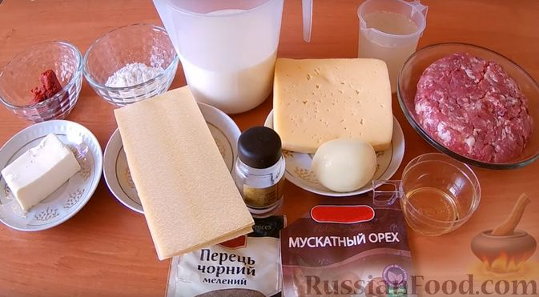
Шаг 1. Подготавливаем все необходимые ингредиенты.

Шаг 2. Лук нарезаем мелкими кубиками.
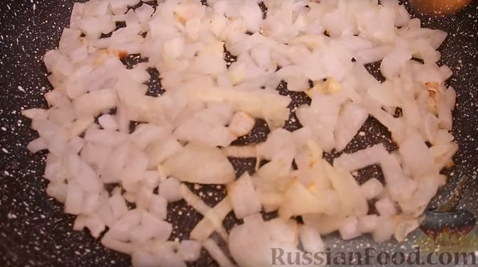
Шаг 3. Лук обжариваем на растительном масле до золотистости.
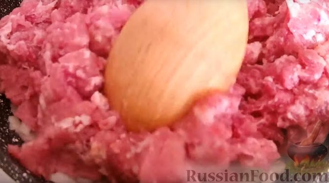
Шаг 4. Как только лук стал золотистым и мягким, добавляем к нему фарш.
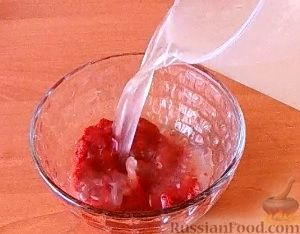
Шаг 5. Томатную пасту разводим мясным бульоном.
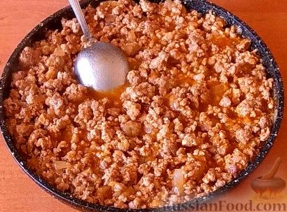
Шаг 6. Фарш солим, перчим, добавляем томатную пасту, смешанную с бульоном, и тушим минут 10.
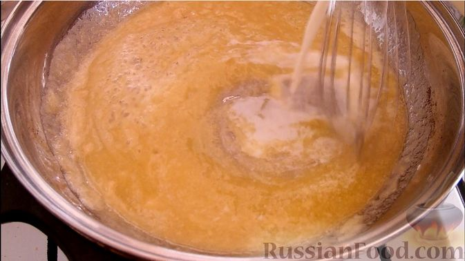
Шаг 7. Готовим соус бешамель. В сковороде растапливаем сливочное масло, добавляем просеянную муку, непрерывно помешивая венчиком. Тонкой струйкой вливаем молоко, продолжая помешивать.
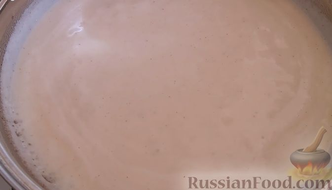
Шаг 8. Как только соус начнёт густеть, добавляем соль и мускатный орех. Когда соус начнёт кипеть, выключаем огонь.
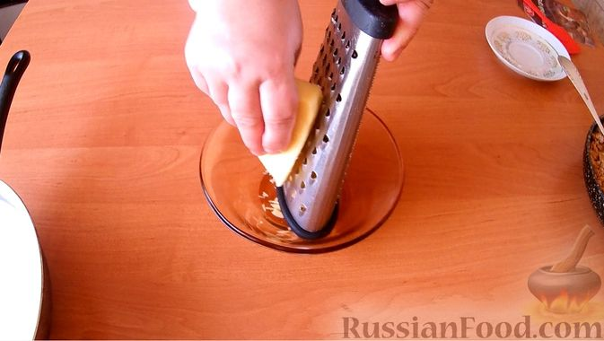
Шаг 9. Сыр натираем на крупной тёрке.
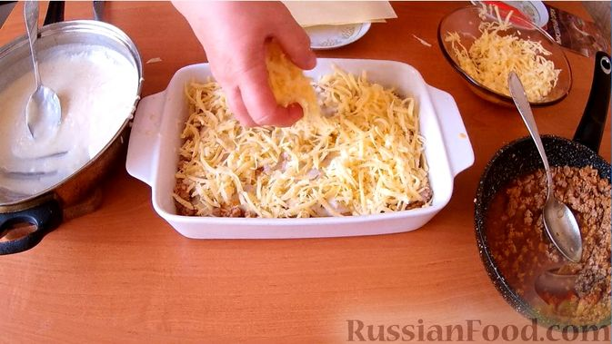
Шаг 10. Духовку разогреваем до 200 градусов. Собираем лазанью. Дно формы для запекания смазываем соусом бешамель. Затем выкладываем слой листов лазаньи (их можно свободно ломать). Сверху добавляем мясную начинку и равномерно распределяем. На мясную начинку - снова соус бешамель. Посыпаем сыром. Все слои выкладываем в том же порядке. Последним слоем должен быть сыр.
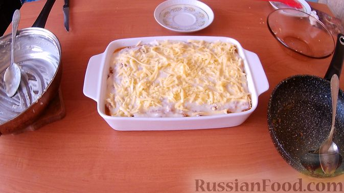
Шаг 11. Форму с лазаньей отправляем в разогретую до 200 градусов духовку примерно на 30 минут (ориентируйтесь на свою духовку).
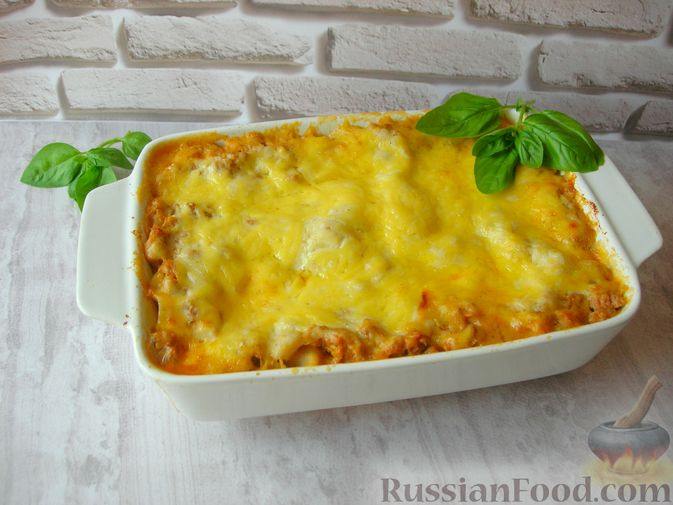
Шаг 12. Приятного аппетита!